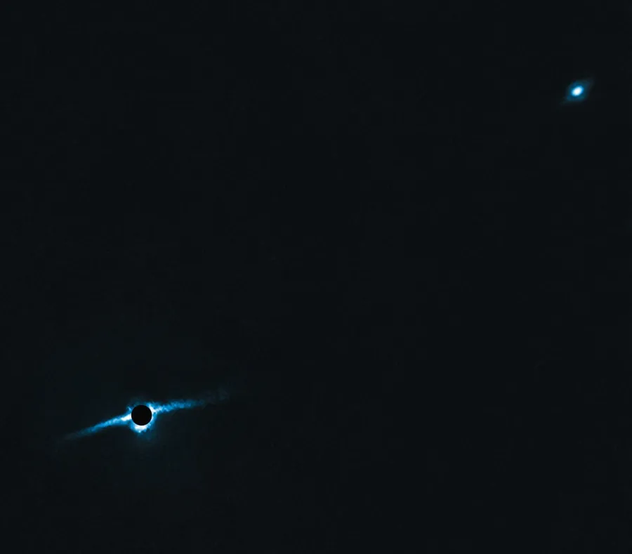

October 26, 2015
HD 106906 b: planet far outside the debris disk of a binary star
The SPHERE instrument on ESO's Very Large Telescope imaged the edge-on debris disk around the binary star HD 106906 AB. In the image the stars are hidden behind a mask (lower left); the planet HD 106906 b is the bright dot at the upper right.
According to ESO the planet orbits the star pair at 650 times the Earth–Sun distance and has up to eleven Jupiter masses at about 1500 degrees Celsius. HD 106906 AB thus became the first binary star system in which both a planet and a debris disk were imaged.
Source: ESO Picture of the Week: "Planet-hunting SPHERE images first circumbinary planet system with disc" (potw1543a)., 2015-10-26